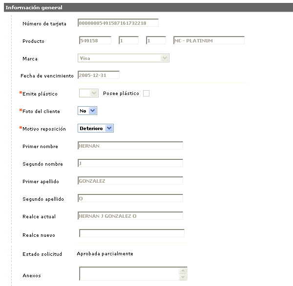
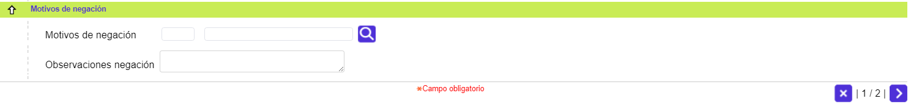
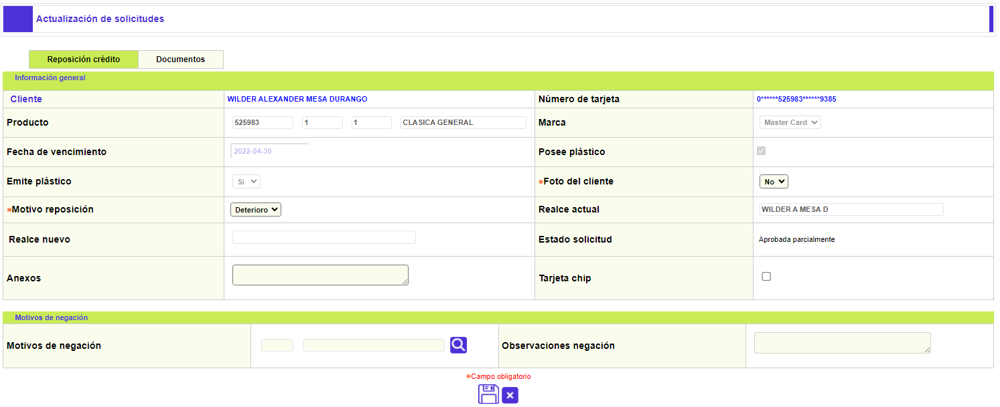
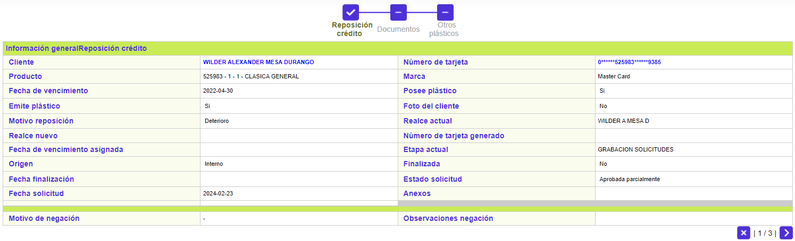

Reposición crédito
A través de este formulario se realiza la solicitud que permite reemplazar los plásticos de tarjeta crédito emitidos, bien sea por deterioro físico del plástico, por presentar fallas al tratar de leer la banda magnética, o por error en el nombre del cliente que aparece realzado en el mismo. A partir de la solicitud de Reposición, la entidad efectúa la generación de un nuevo plástico calculando o no la fecha de vencimiento para éste, así como los costos que se cargarán al cliente, de acuerdo con los parámetros que la entidad defina.
Los campos Número tarjeta y Fecha vencimiento despliegan información una vez la solicitud ha surtido la etapa de Aprobación o la etapa anterior al realce.
En el formulario de Ingreso de solicitudes se selecciona la opción Reposición crédito y la tarjeta a la cual se le ingresará la solicitud.
Tarjeta |
Campo con lista de valores que contiene los diferentes números de tarjeta del cliente. El usuario debe seleccionar aquella para la cual se desea solicitar la Reposición. |
Adicionar: una vez se han seleccionado los datos anteriores, se deplegará un wizard de dos pasos. El primero de ellos contiene los bloques Información general y Motivos de negación:

Cliente |
Campo de salida desde el cual se podrá invocar la consulta del cliente al cual se le está ingresando la solicitud. |
Número tarjeta |
Campo de salida desde el cual se podrá invocar la consulta de tarjeta del cliente al cual se le está ingresando la solicitud. |
Producto |
Estos campos se llenan automáticamente una vez ingresado el número de tarjeta asociado a la solicitud, permitiendo conocer el Segmento, Grupo de afinidad y Descripción que junto con el Bin conforman el producto crédito a reponer. |
Marca |
Campo de salida que ilustra la franquicia asociada al producto en la Definición del producto. |
Fecha Vencimiento |
Campo de salida en formato YYYY-MM-DD, que indica la fecha en que expirará el nuevo plástico de la tarjeta, cuando se ha parametrizado que el sistema deba calcular una nueva fecha de vencimiento. |
Posee plástico |
Este campo de acuerdo con lo parametrizado a nivel de producto, bien sea crédito, determina si se genera un plástico a modo de materialización del producto asociado a la tarjeta desde la cual se genera la solicitud. Si esta casilla aparece marcada (activa) permite interactuar con el campo Emite plástico. |
Emite plástico |
En este campo con lista de valores adjunta se debe seleccionar entre Si se emite plástico o No, dependiendo del tipo de solicitud. El poder interactuar con este campo depende del valor que tenga el campo Posee plástico. |
Foto del cliente |
Campo que posee lista de valores adjunta en la que es posible indicar Si o No el nuevo plástico incluirá la foto del cliente, de acuerdo con lo parametrizado para cada producto en particular. |
| Motivo reposición | Campo que posee lista de valores adjunta de la que debe seleccionarse entre Deterioro, Banda (magnética) o Nombre la razón por la cual se solicita la reposición del plástico. |
Primer nombre |
Campos de salida que contienen los datos del primer nombre registrado para la tarjeta. |
Segundo nombre |
Campos de salida que contienen los datos del segundo nombre registrado para la tarjeta. |
Primer apellido |
Campos de salida que contienen los datos del primer apellido registrado para la tarjeta. |
Segundo apellido |
Campos de salida que contienen los datos del segundo apellido registrado para la tarjeta. |
| Realce actual | En este campo se despliega el nombre del cliente tal y como aparece en el plástico actual a reponer. |
| Realce nuevo | Campo que se activa si la opción señalada en el campo Motivo reposición corresponde a Nombre, y permite registrar el nombre correcto o como el cliente desea que aparezca en el nuevo plástico a emitir, pero teniendo en cuenta que éste no exceda la longitud máxima del mismo. |
Estado solicitd |
Este campo ilustra la condición en que se encuentra la solicitud en cada momento, y que puede ser En zona gris, Negada totalmente, Negada parcialmente, Aprobada totalmente o Aprobada parcialmente. |
| Anexos | Campo que permite ingresar información relacionada con la solicitud, referente a documentos suministrados por el cliente u otros datos. |

Motivo negación |
Si aplica, contiene el código y la descripción de la causal de negación de la solicitud. |
| Observaciones negación | Campo que puede contener notas que ilustren las razones por las cuales fue denegada la solicitud. |
A través de los botones de la parte inferior derecha, se podrá cancelar el proceso o ir al segundo paso del wizard: Documentos.
Actualizar: Si en formulario del ingreso de solicitudes el usuario invoca la opción Actualizar, se despliega el siguiente formulario.

Detalle: De igual forma, si en formulario del ingreso de solicitudes el usuario invoca la opción Detalle, se despliega el siguiente formulario.
